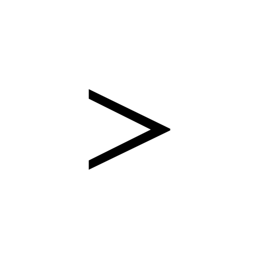
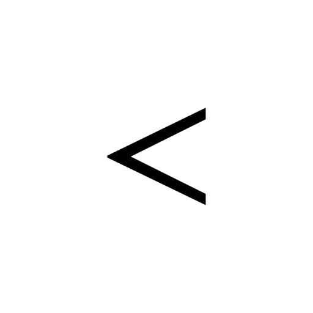
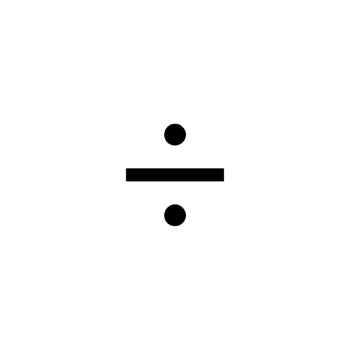
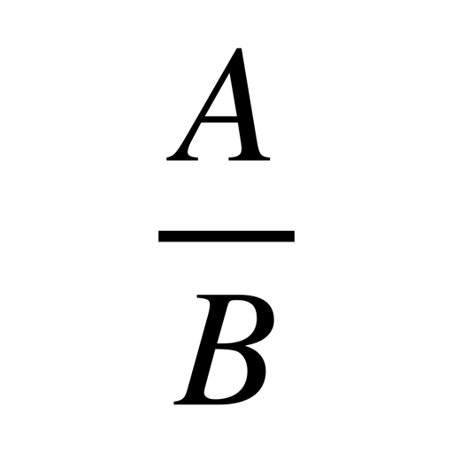
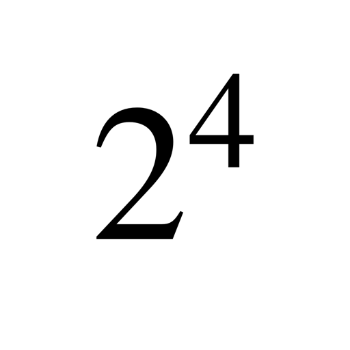
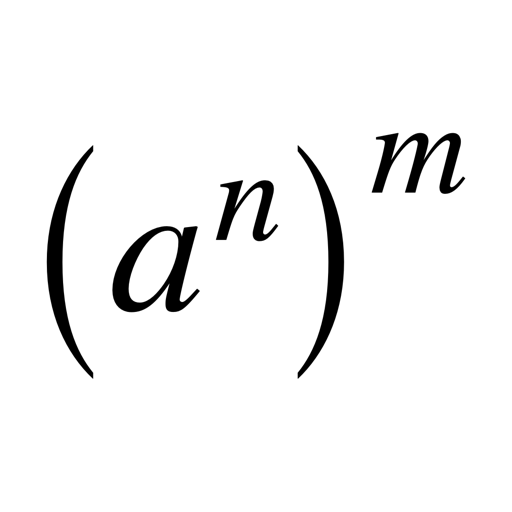

| Operation | Result | LaTeX code |
|---|---|---|
| Greater or equal | \ge | |
| Greater |  | > |
| Less or equal | |
\le |
| Less |  | < |
| Dot product | |
A \cdot B |
| Cross product | |
A \times B |
| Division |  | \div |
| Fraction |  | \frac{A}{B} |
| Brackets | |
\left( A \right) |
| Powers |  | 2^4 |
| Power with brackets |  | \left( a^n \right)^m |
| Square root | |
\sqrt{2} |
| Index | a_n | |
| Radical sign | |
\sqrt[4]{8} |
| Root of a fraction | |
\sqrt{\frac{4}{25}} |
| Fraction with a root | |
\frac{3}{\sqrt{2}} |